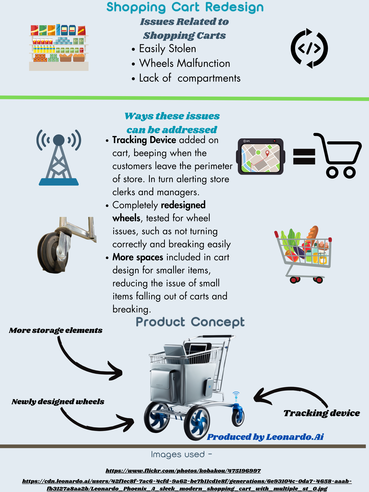

My Projects
Mystic Slice - Twine Game - 24FA COMPUTING SCIENCES PORTAL U1
Reflections
Lessons Learned: Improved my storytelling and the basics of making a story with Twine.
What I Liked: Designing an engaging interactive experience and getting to choose character images for the different customer paths.
What I'd Change: Expanding the paths and making all selections of the game work and making the story more in depth.
Future Impact: Enhanced my skills on making an interactive story telling game and how to use programs/websites like Twine.
AI in Game Development - 24FA COMPUTING SCIENCES PORTAL U1

Reflections
Lessons Learned: Learned what games use AI in their games and how AI is used within games.
What I Liked: Designing an Infographic such as the graphics, color schemes and the layout and researching the impact of AI in games.
What I'd Change: Simplify information for better readability and adding less text.
Future Impact: Better understanding of AI concepts for game development and how to make an Infographic.
Shopping Cart Redesign - 24FA COMPUTING SCIENCES PORTAL U1
Reflections
Lessons Learned: Shopping carts have some downsides such as easily being stolen, wheels not working like they are supposed to, and not enough space.
What I Liked: I liked seeing how a shopping cart could be changed and ways to make it even better.
What I'd Change: Add more features to the shopping cart and make it more unique.
Future Impact: Learned how to redesign a product and present it.
First HTML Webpage - 24FA COMPUTING SCIENCES PORTAL U1
Reflections
Lessons Learned: Improved my skills on designing a website and how use HTML to incorporate features, etc.
What I Liked: Learned the basics of HTML.
What I'd Change: Make the webpage look more modern and interactive.
Future Impact: More knowledge on how to use HTML to make a base for a website.
First CSS Webpage - 24FA COMPUTING SCIENCES PORTAL U1
Reflections
Lessons Learned: Gained knowledge on website development and how to make a style page.
What I Liked: The animated wording on the home page.
What I'd Change: Add more pages, include more features, and add some more animations.
Future Impact: Gained website CSS style skills and how to make a website awesome with just CSS and HTML.
Reflections
Lessons Learned: Learned how to quickly create a functional portfolio.
What I Liked: Google Sites’ selection of customization details and easy to use features.
What I'd Change: Add more personality and make the portfolio website even better.
Future Impact: Gained insight into easily accessible web tools for creating quick websites and how to make a portfolio to feature projects.
Cyberbullying Problem & Solutions Essay - 24FA COMPOSITION I U21
Reflections
Lessons Learned: Enhanced my writing skills on making an essay with a problem stated and the solution to the problem.
What I Liked: Learning about how to prevent cyberbullying and what both sides can do to lessen the issue.
What I'd Change: I would change the paragraph layout and make it so there is more of my own words rather than quotes.
Future Impact: Knowing how to create an essay that helps to state solutions to a certain issue and how the issue can be combatted. I also learned how I can research certain topics and what websites are reputable sources of information.
Cyberbullying Infographic - 24FA COMPOSITION I U21
Reflections - 24FA COMPOSITION I U21
Lessons Learned: A lesson that I learned is about making a infographic that appeals to certain demographic to grasp their attention.
What I Liked: Designed an infographic that can help people being cyberbullied and to show what can be done about it.
What I'd Change: More colors and more graphics.
Future Impact: More insight on the effects that cyberbullying has on people and the steps that can be taken to combat it. I now know how to make an infographic that appeals to a younger demographic and shows solutions to problems.